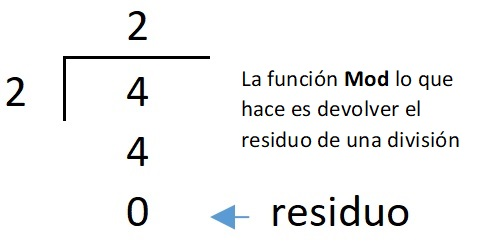

- - - Ejemplo de MOD en Pseint - - -

Ejemplo - - - - - - - - - - - - >
- En este ejemplo se puede ver como se ocupa MOD en un algoritmo de PSeint
Como mencione en
que es mod en Pseint
el MOD es el residuo de una división, lo que sobra es el residuo y en si
lo que da MOD.
¿Qué es MOD en PSeint?
Ir a ¿Qué es MOD en Pseint?